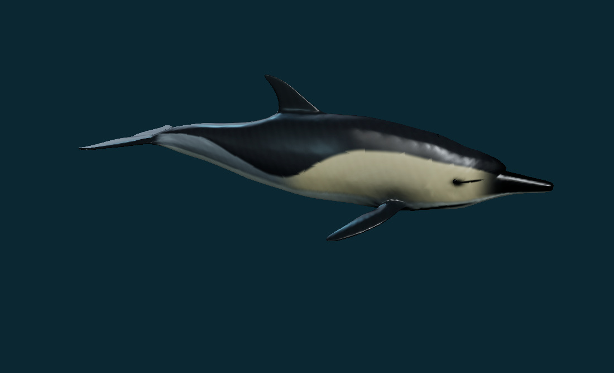
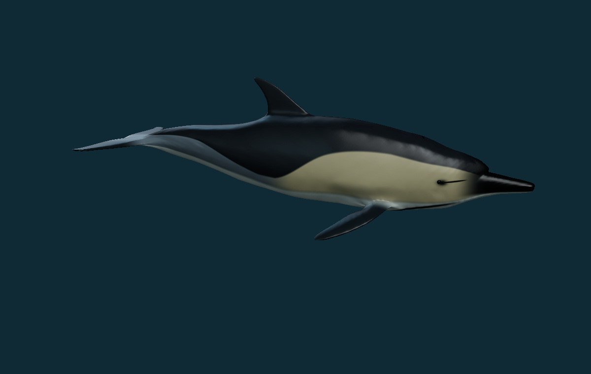
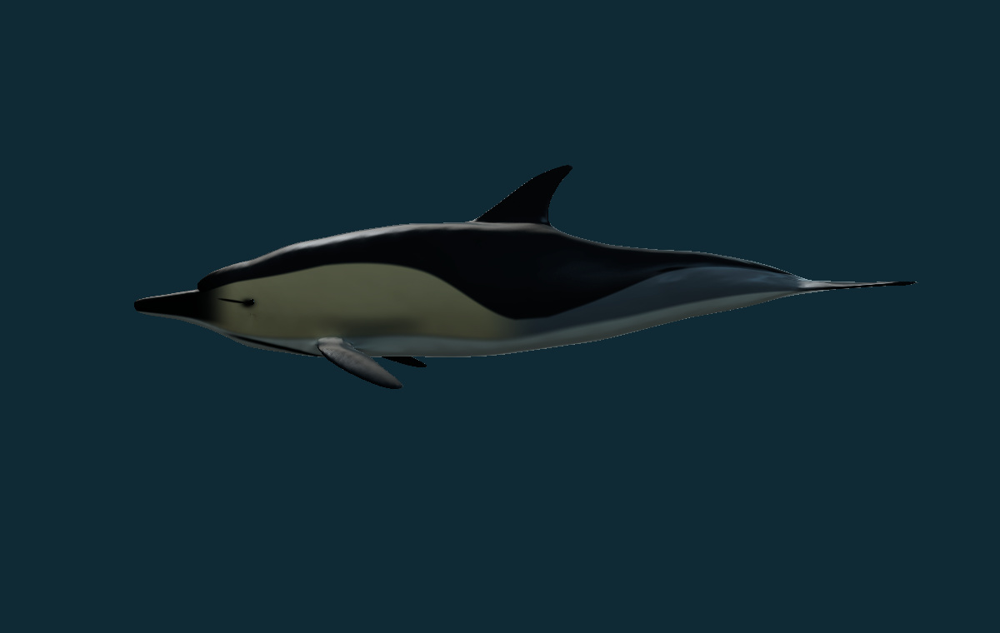
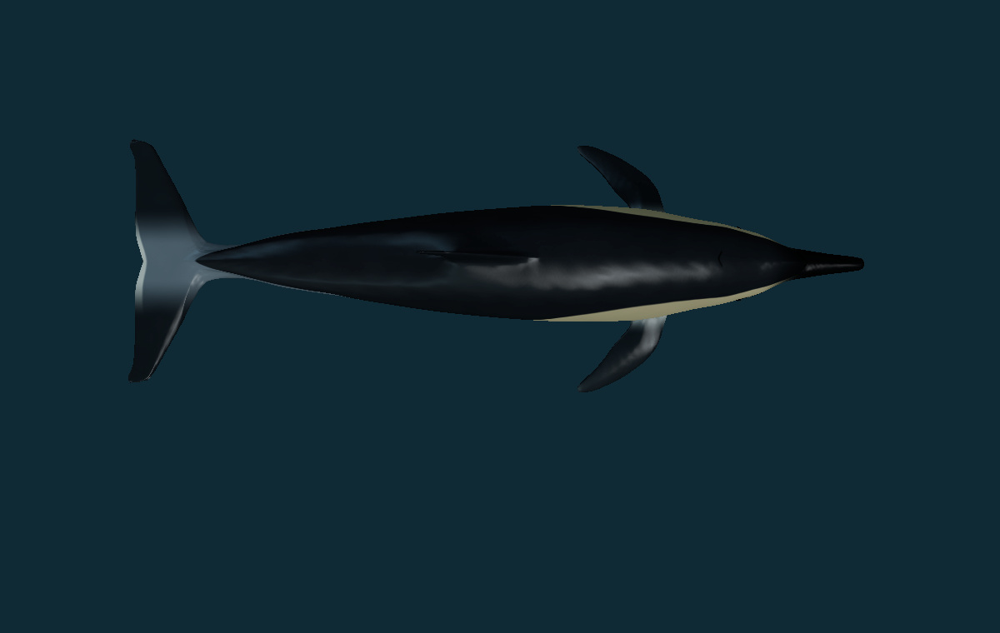
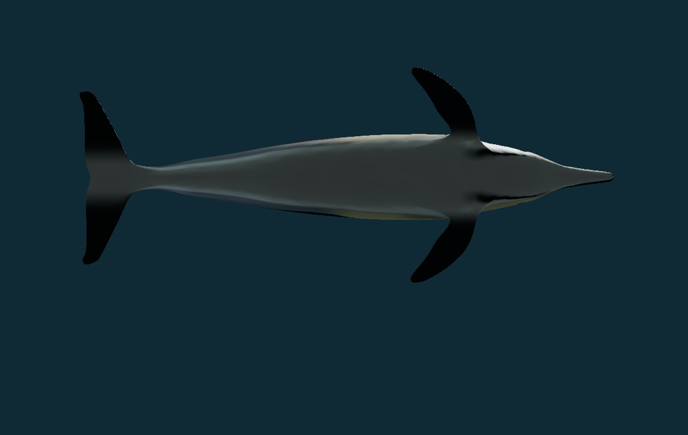
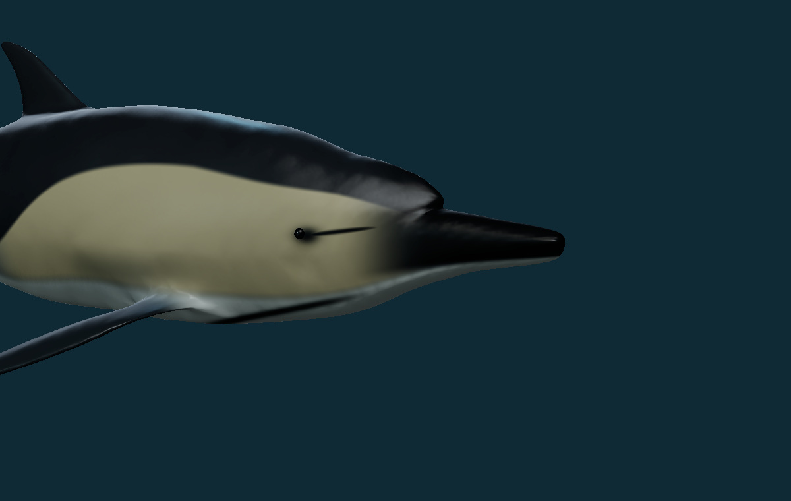
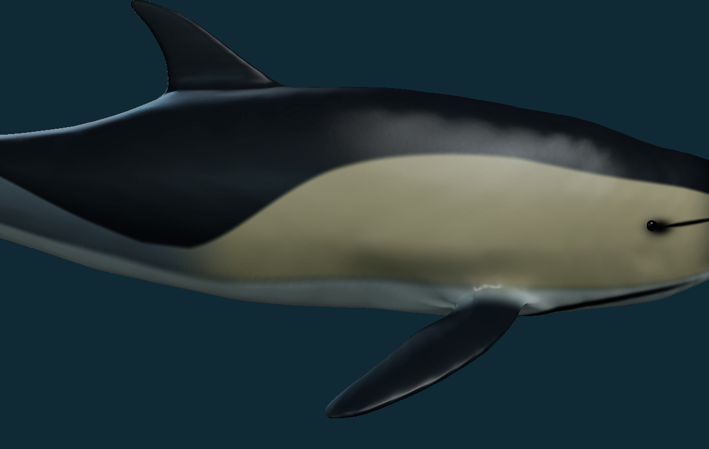
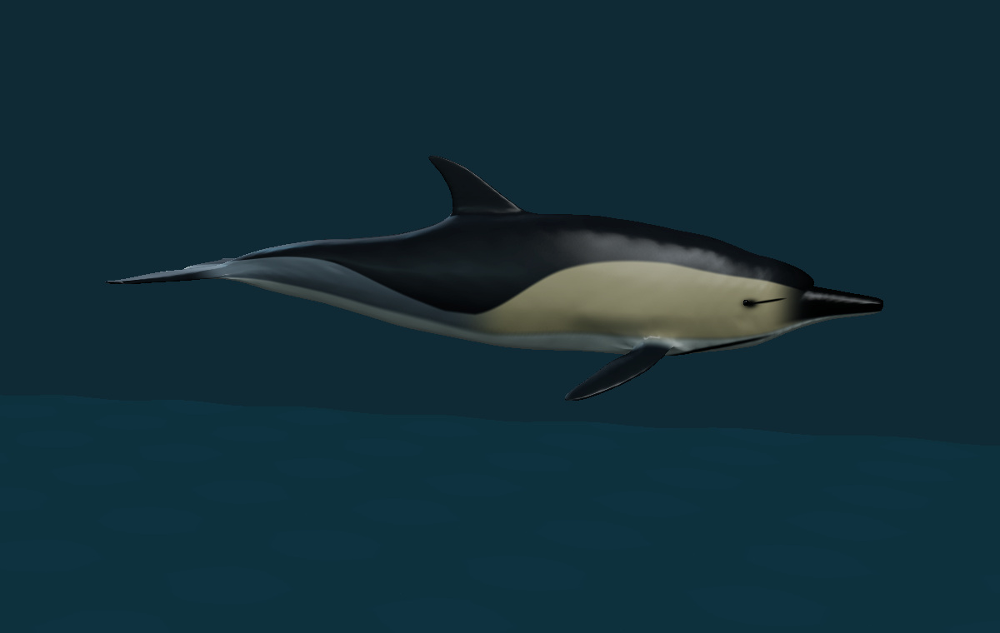

Common dolphin: continuous skin and softer wet reflections
The repeated stripes and triangular color breaks in the previous common-dolphin skin were real rendering defects. The original mirrored UV layout overlapped surface regions after the body refinement. The old material also added a periodic sine stripe and an overly sharp clearcoat highlight. This revision rebuilds the texture layout and material response.
Open the interactive dolphin · Download the updated model · Archive record
What changed
- Non-overlapping texture charts separate the body, fins and folds around their attachments. Padding protects chart edges during filtering.
- Continuous charcoal cape, buff anterior flank, grey posterior flank and pale belly replace the broken triangular color boundaries. The long repeating stripe term is removed.
- A lossless 4K albedo and restrained non-periodic skin variation replace the lower-resolution JPEG bake. Separate 2K normal and roughness maps keep the skin smooth at close range.
- Reduced clearcoat, broader highlight roughness and balanced lighting reduce the plastic-like glare.
- Every ordered triangle position and normal is identical to the reviewed 0.6.62 body. Only texture seams add/reorder vertices; body shape is preserved. The six finite movement studies, including jump and re-entry, remain in place.
Actual before and corrected views


The lighting is intentionally softened as part of this correction. These are model renders, not photographs or measurements.






Verification and limits
Geometry, face order, normals, texture files, export contents, reversible record edits and retained movement controls are checked in the repository tests. All 337 species identities and all 37 prior registered source assets are preserved; the other 336 species records are unchanged. This is a skin/material correction, with no new taxonomic or measured physiological conclusion.
The available review browser uses the compatibility software renderer. The inspected views therefore do not establish the appearance of WebGL on every phone, a calibrated optical fit, or independently certified photorealism. Authored dimensions, pigmentation, surface roughness and behavior timing remain unmeasured. The original research and biological limits remain available in the previous scientific report.
Source and rights
The body derives from the user's supplied common-dolphin.zip. The source author and licence were not included in that ZIP. Original source rights are retained; no new blanket grant is asserted. New code, numeric pigment and texture work are original PhenoVoxel contributions, subject to the supplied source rights. No private photograph or phone screenshot pixels are included in the public material maps or report.
The free atlas was generated locally using watlas / xatlas. No generation service credits were spent and no private images were sent to a texture service. The source-credit record remains in the separate rights note.
File evidence
Control model: model-dolphin-supplied-v0663.glb · 2634932 bytes · 6f1bf6d4e5368998c9414cbe0cbfc6a5bb46da6c19e90324af254493a19ba566
Finished static model: dolphin-corrected-v0663.glb · 5499012 bytes · 304e3697d809645bb12f554ad84e52a64b1f59398e794f22880fdf5162340415
| Map | Dimensions | Bytes | SHA-256 |
|---|---|---|---|
| dolphin-albedo-v0663.png | 4096 × 4096 | 1420490 | c9b8106ae3d9087f062dc8d67d791e11286d99dd0144247412ef2f5c3dcc38b7 |
| dolphin-normal-v0663.png | 2048 × 2048 | 1681245 | dc1fe3c11abfa9bab92433d3c862aa70722c63a1a278656d97f7e32ebbdd1ee0 |
| dolphin-roughness-v0663.png | 2048 × 2048 | 364025 | 62ada02b4975ee8d517e5847fb720e19e54ef6fb36e8c5c7f35d01b2334af608 |


Source and geometry proof · Material manifest · Static export proof · Reversible record ledger